Deutsch & Englisch sprechende Geburts- und Postpartum Doula German & English Speaking Birth and Postpartum Doula
Schön, dass du da bist! Ich bin Lara. Wonderful to have you here! I'm Lara.
Präsent, liebevoll und verlässlich. Selbst Mama von 3 Kindern und Doula seit 2020. Mir geht es darum, dass du frei von äußeren Erwartungen auf deinen Körper und dein Gefühl vertrauen darfst – egal wo du gebären möchtest, wie du Schmerzen begegnest oder welche Unterstützung du dir wünschst.
Present, loving, and reliable. A mother of three and a practicing doula since 2020. My wish is for you to trust your body and intuition free from external expectations — wherever you choose to give birth, however you meet sensations, and whatever support you desire.
Ich begleite dich von Herzen mit Ruhe, Empathie und sanfter Fürsorge. Mein Ziel ist es, dir den Rücken zu stärken und dir einen geschützten Raum für deine Wünsche und Bedürfnisse zu schenken.
I accompany you wholeheartedly with calm, empathy, and gentle care. My goal is to hold your back and provide a safe, protected sanctuary for your wishes and needs.
„IF WOMEN WERE AWARE OF THE IMMENSE FORCE THAT DWELLS IN THEM, THEY WOULD NOT ONLY CHANGE THE BIRTH SCENE, BUT SOCIETY AS A WHOLE.“
— VERENA SCHMID
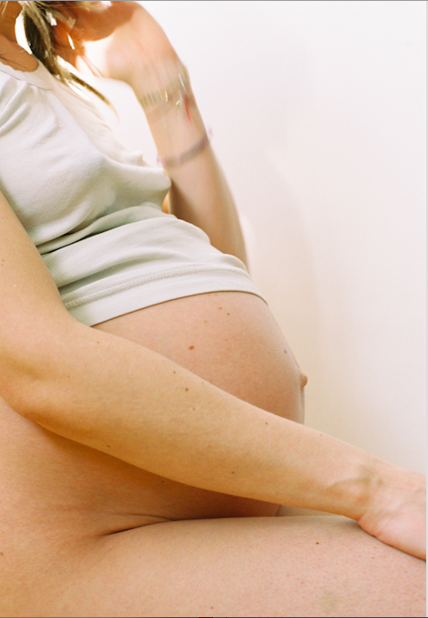
Schwangerschaft Pregnancy
Hier geht es um mehr als nur Information, zusammen machen wir in Einzel und Paar-Sitzungen Platz für den neuen Lebensabschnitt - körperlich, mental und spirituell. In unseren Treffen biete ich dir und euch immer wieder kleine Auszeiten, in denen ihr reflektieren könnt, was euch die Schwangerschaft gerade zeigt und wo ihr noch Unterstützung braucht. This is about much more than information. Together, in individual and couples' sessions, we make space for this new chapter of life — physically, mentally, and spiritually. During our meetings, I offer you peaceful pauses to reflect on what your pregnancy is illuminating and where you need caring support.
Geburt Birth
Wo und wie auch immer du gebären möchtest – ob im Krankenhaus, außerklinisch oder per (geplantem) Kaiserschnitt – ich begleite dich und deine Familie in ganz Berlin. Mit der Erfahrung aus drei eigenen Geburten und knapp 30 begleiteten Familien schenke ich dir an diesem besonderen Tag klare Präsenz und liebevolle Impulse. Frei von eigenen Agenden stehe ich verlässlich an deiner Seite. Ich bleibe da, wenn im Raum die Stimmung kippt, bleibe ruhig und bei euch, wenn es hektisch wird oder Pläne sich ändern. Wherever and however you wish to give birth — whether in a hospital, out-of-hospital, or via a (planned) cesarean — I support you and your family throughout Berlin. Drawing on the experience of my own three births and nearly 30 supported families, I bring calm presence and loving guidance to this momentous day. With zero personal agenda, I stand steadfastly by your side. I remain grounded when the room's energy shifts, staying steady and present with you when things get hectic or plans change.
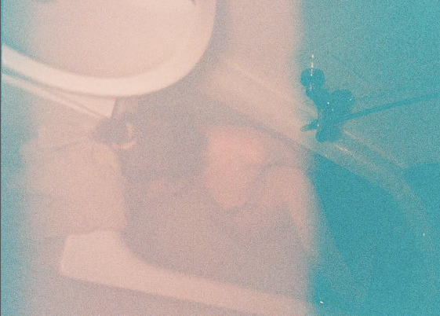
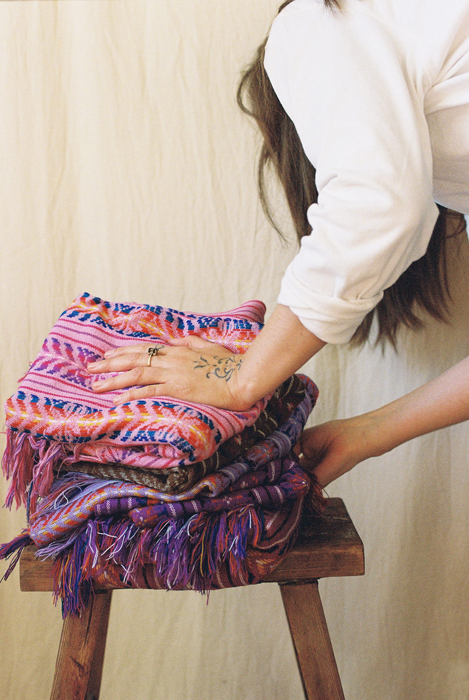
Postpartum
Im Wochenbett bin ich je nach Bedarf für die ganze Familie oder auch speziell für die neugeborene Mama da. Mein Angebot variiert vom Kochen nährender Mahlzeiten, das Halten deines Babys zu wohltuenden Kräuter Bädern und Massagen für dich. In the postpartum period, I am there for your whole family or specifically dedicated to the newly born mother. My support ranges from cooking nourishing, warm meals and holding your baby to soothing herbal baths and restorative massages for you.
Gebärpool Birth Pool
Miete ein professionelles Gebärpool-Set für deine Hausgeburt. Das warme Wasser spendet natürliche Schmerzlinderung, Entspannung und Geborgenheit bei dir zu Hause. Rent a professional birth pool set for your home birth. Warm water offers natural pain relief, deep relaxation, and comfort in the intimacy of your home.
Was macht eine Geburtsdoula? What Does a Birth Doula Do?
Schwellenübergänge im Leben Life's Rites of Passage
Doulas sind wie eine professionelle Freundin bei dem Schwellenübergang Geburt. Die Reise ins Elternsein ist eines der oder vielleicht sogar DAS bedeutendste Ereignis in dem Leben von zwei Menschen, was uns nachhaltig verändert. Doulas are like a professional friend through the threshold of birth. The journey into parenthood is one of the — perhaps THE — most profound events in the lives of two people, reshaping us permanently.
Professionelle emotionale Begleitung ist dabei häufig elementar, um die Erfahrungen zu machen, die wir uns in dieser transformierenden Zeit wünschen. Vor allem weil wir den Zugang zu dem natürlichen Prozess verloren haben und durch Medien von Angst geprägt sind. Professional emotional accompaniment is often fundamental to creating the experiences we long for during this transformative time. Especially because our society has largely lost connection to the natural process and is heavily conditioned by fear in the media.
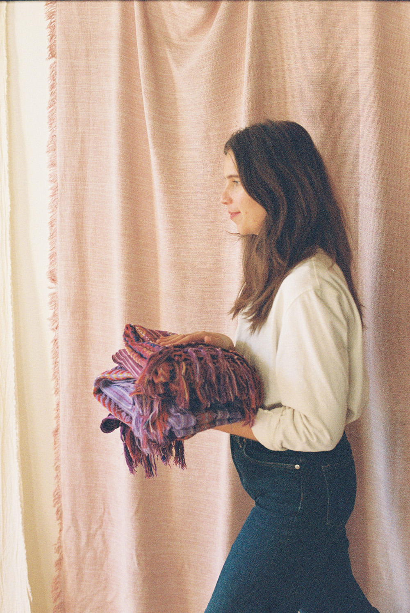
Gemeinsam ein starkes Team A Strong Team Together
Doulas arbeiten Hand in Hand mit deiner Begleitperson und bilden gemeinsam mit deinem Lieblingsmenschen ein starkes Team. Da eine Geburt auch für deine/n Partner/in eine intensive Erfahrung ist, schaffen wir Orientierung und Entlastung. Doulas work hand in hand with your birth partner, creating a resilient, united team with your favorite person. Because birth is deeply intense for your partner too, we bring orientation and grounded relief.
Wir helfen dabei, Unsicherheiten gegenüber medizinischen Abläufen abzubauen und schenken Raum für notwendige Pausen. So kann sich dein/e Partner/in genau im eigenen Wohlfühlbereich einbringen und voll und ganz die Unterstützung sein, die du dir wünschst. We help ease anxieties around medical procedures and hold space for necessary breathers and rest. This allows your partner to show up fully in their own zone of comfort and be the loving anchor you truly need.
Wächterin der Intimität Guardian of Intimacy
Als Doula sehe ich mich als Wächterin der Intimität. Ich bin keinesfalls dafür zuständig medizinische Probleme zu erkennen, dies ist Aufgabe der Ärzte. Ich bin auch nicht zuständig körperliche Gegebenheiten zu überwachen, das liegt im Aufgabenbereich der Hebammen. As a doula, I view myself as a guardian of intimacy. I am in no way responsible for diagnosing medical issues — that is the role of physicians. Nor am I responsible for monitoring clinical physiological conditions — that belongs to the midwives.
Ich bin vielmehr dafür da die Frau und ihre Familie emotional und vielleicht auch spirituell zu begleiten, zu sehen und ihren individuellen Raum zu halten. Je nach ihrem Wesen und ihrem einzigartigen Weg passt sich meine Begleitung immer wieder an die neuen Bedürfnisse an. Nicht beurteilend, sondern in Mitgefühl, Dankbarkeit und dem Vertrauen in ihren eigenen Prozess. Rather, I am here to accompany the mother and her family emotionally and spiritually, seeing them deeply and holding their unique sacred space. Attuned to their essence and distinct journey, my support continually adapts to evolving needs. Never judgmental, but grounded in compassion, gratitude, and steadfast trust in your innate process.
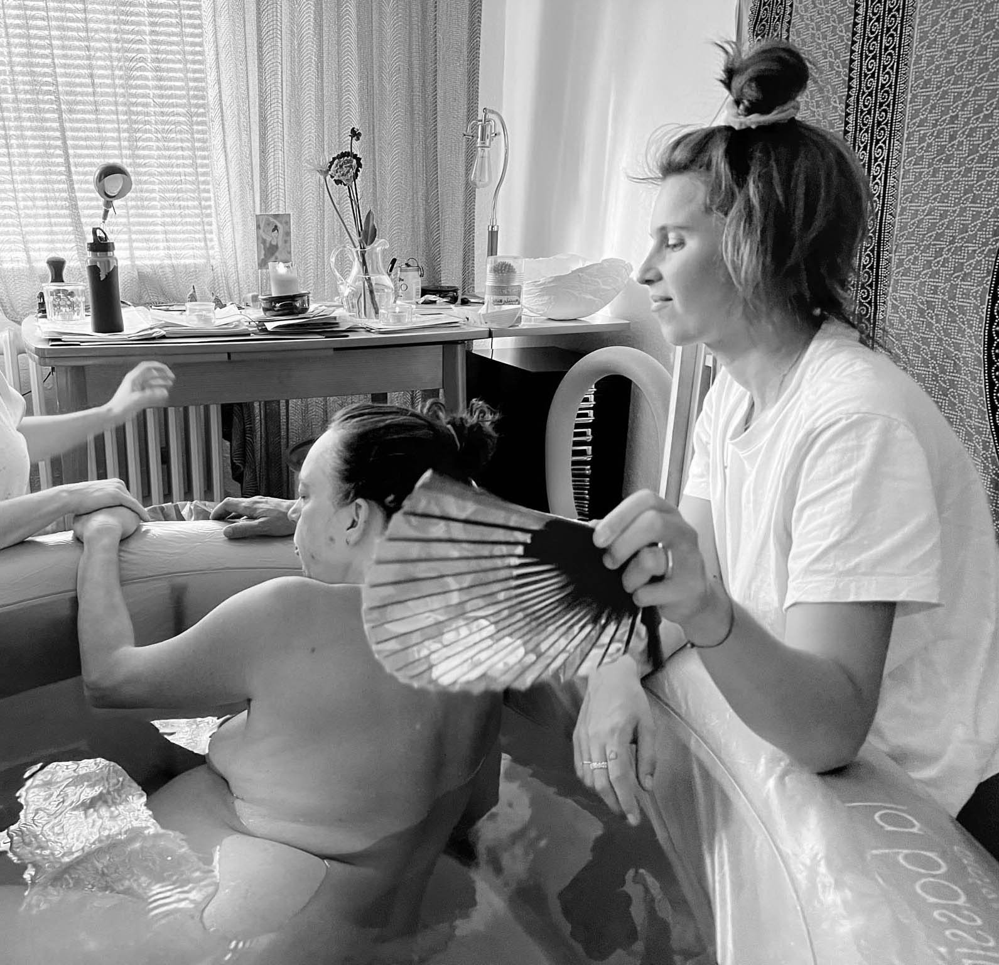
Vorteile einer Doula-Begleitung Evidence-Based Benefits of Doula Care
FAQ zur Doula-Begleitung Doula Care FAQ
Was ist der Unterschied zwischen einer Hebamme und einer Doula? What is the difference between a midwife and a doula? +
Eine Doula ersetzt keine Hebamme, da sie keine medizinischen Aufgaben übernimmt. Stattdessen ist sie eine zusätzliche, kontinuierliche und zugewandte Begleiterin vor, während und nach der Geburt. Sie kümmert sich um das emotionale und seelische Wohlergehen der Gebärenden, stärkt sie in ihrer Selbstbestimmung und schenkt ihr Vertrauen und Zuversicht. Der wohl wichtigste Aspekt einer Doula-Begleitung ist ihre Präsenz: Sie bleibt an deiner Seite und ist die feste Konstante. A doula never replaces a midwife, as she performs no clinical or medical tasks. Instead, she is an additional, continuous, and devoted companion before, during, and after birth. She tends to the emotional and soulful well-being of the birthing mother, empowers her self-determination, and instills deep trust and calm confidence. The most vital aspect of doula care is presence: she remains continuously by your side as an unwavering constant.
Was ist, wenn du bei der Geburt krank bist? What happens if you are unwell when labor begins? +
Wenn ich mich für eine Geburtsbegleitung committe, ist es stets mein oberstes Ziel, auch persönlich dabei zu sein. Ich achte gut auf mich und tue alles in meiner Macht Stehende, um gesund zu bleiben. Sollte ich jedoch aufgrund von Krankheit oder anderer unvorhersehbarer Umstände verhindert sein, bin ich berechtigt, eine qualifizierte Vertretungsdoula an meine Stelle einzusetzen. When I commit to a birth, my highest priority is always to be there in person. I take great care of my health and do everything in my power to remain well. However, should unexpected illness or unforeseen emergencies arise, I have a trusted, qualified backup doula ready to step in seamlessly on my behalf.
Wer ist die Vertretungsdoula? Who is the backup doula? +
Es gibt in Berlin viele wunderbare Doulas. Wir suchen gemeinsam eine passende Vertretung aus, sodass eure Wünsche zu 100 Prozent berücksichtigt werden. Berlin is blessed with wonderful, skilled doulas. Together, we choose a compatible backup doula in advance so that your unique preferences and wishes are 100% honored.
Kann das Honorar von der Krankenkasse übernommen werden? Can doula fees be reimbursed by health insurance? +
Einige gesetzliche und private Krankenkassen bezuschussen die Rufbereitschaft (oft mit rund 250 Euro). Ich helfe dir gerne dabei, das für dich herauszufinden. Several statutory and private German health insurance providers offer partial reimbursement for on-call fees (often around €250). I am happy to help you navigate and inquire with your provider.
Was ist, wenn die Geburt sehr lange dauert? What if labor takes a very long time? +
Eine Geburt kann sich über mehrere Tage hinziehen – das ist Teil meines Berufs. Ich bleibe so lange an eurer Seite, bis die Plazenta da ist und ihr gut für das Wochenbett angekommen seid. Sollte ich nach über 24 Stunden im Einsatz an meine Grenzen stoßen, besprechen wir gemeinsam, ob ich mich kurz ausruhe oder ob wir die Vertretung hinzuziehen. Labor can unfold over many hours or even days — that is an honored part of my calling. I stay by your side until the placenta is birthed and you are softly settled into the postpartum space. If I reach physical limits after more than 24 continuous hours, we discuss together whether I take a brief rest or invite our backup doula to seamlessly step in.
Hi, ich bin Lara Hi, I'm Lara
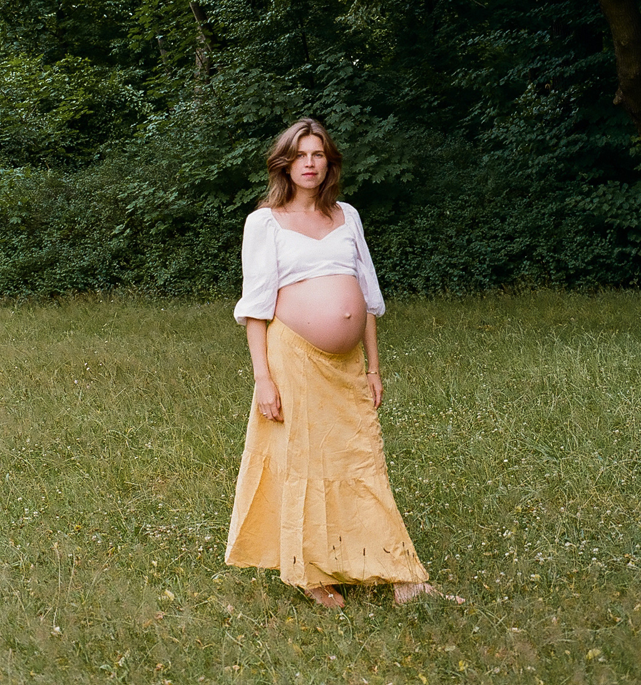
Und das Gesicht hinter Motherlover. And the heart behind Motherlover.
Meine Reise ins Doulasein begann 2017 mit der Geburt meiner ersten Tochter. Zu dieser Zeit brachte ich auch ein fehlendes Stück von mir selbst zur Welt: das Muttersein. Schon immer haben mich schwangere Bäuche sowie die Themen Geburt und Muttersein fasziniert. Seit meiner eigenen Schwangerschaft empfinde ich reine Bewunderung für alles, was damit zu tun hat, Mutter zu werden und zu sein.
My journey into doula work began in 2017 with the birth of my first daughter. At that time, I also gave birth to a missing piece of myself: motherhood. Pregnant bellies, birth, and maternal essence have always fascinated me. Since my own first pregnancy, I have felt pure awe and reverence for everything involved in becoming and being a mother.
Durch meine persönlichen Erfahrungen bin ich tiefer in verschiedene Facetten des Mutterseins eingetaucht. Ich habe gemerkt, wie wichtig es ist, nicht nur während der Schwangerschaft, sondern auch danach als Mutter genährt zu werden. Mütter halten das Nervensystem der ganzen Familie sowie die Last des Klischees „Mutter“. Wir sind der Fels der Familie, die Basis für die nächste Generation und brauchen daher Unterstützung, damit wir uns in dieser Rolle entfalten können und ein gesundes Vorbild für unsere Kinder sind. Väter sind natürlich genauso wichtig, aber ich konzentriere mich in meiner Arbeit, wie mein Name es schon sagt, vorrangig auf das Thema Mutterschaft.
Through my personal experiences, I dove deeper into the many facets of motherhood. I realized how vital it is to be continuously nourished as a mother — not only during pregnancy, but long after. Mothers hold the nervous system of the entire family as well as the heavy weight of society's "mother" archetype. We are the family's bedrock, the foundation for the next generation, and we need genuine support to blossom in this role and be a healthy role model for our children. Fathers are of course equally essential, but in my work — as my name implies — I dedicate my heart primarily to mothers and motherhood.
„It takes a village to raise a child! And a mother.“
..sagt ein englisches Sprichwort. Und die Wahrheit dahinter spüre ich immer wieder. In unserer Gesellschaft hingegen stoße ich häufig auf einen Mangel an Verständnis und Mitgefühl für diese immense Aufgabe, die Mütter zu erfüllen haben – nicht nur die der Geburt, sondern auch das Finden in der neuen Rolle. Vielmehr wird von Müttern erwartet, dass sie ihr Leben trotz Kind einfach so weiterführen wie vorher. Das ist ein enormer Performance Druck, den ich selbst oft spürte und der im Endeffekt für niemanden gesund ist. Mutter zu werden ist ein Schwellenübergang. Und mit Schwellen Übergängen kommt auch immer das Verabschieden des alten Lebens und das Begrüßen von neuen Seiten. Dafür gibt es auch den Begriff Muttertät oder im englischen “Matrescence”.
...says the proverb. And I feel the profound truth behind it every day. In modern society, however, I frequently encounter a lack of understanding and compassion for the immense rites of passage mothers undergo — not just childbirth, but finding themselves anew. Instead, mothers are applauded when they simply continue living as before. Striving to remain unchanged creates an enormous performance pressure that I felt deeply myself, and which serves no one's well-being. Becoming a mother is a profound threshold. And with life thresholds always comes letting go of the old self and embracing newly emerging depths. In developmental psychology, this is known as "Matrescence" (in German: Muttertät).
„When we become a home for another being, we leave behind our individual, autonomous self and maidenhood. We leave behind membership in the world of nonparents. When we become pregnant, who we were starts to fall away, giving way to something new.“
— Kimberly Ann Johnson
So entstand langsam und organisch dieser Raum namens „Motherlover“. Hier möchte ich, dass sich (werdende) Mütter wohlfühlen – mit all den Gefühlen, die dieser Lebensabschnitt in unserer Gesellschaft mit sich bringt. Ich möchte, dass sich Mütter in ihrem individuellen Wesen und ihren Bedürfnissen gesehen fühlen, und sie daran erinnern, dass sie sich um sich selbst kümmern dürfen. Ganz nach dem Motto: „Put your own life jacket on first!“
Out of this reverence, the sanctuary called "Motherlover" grew slowly and organically. Here, I want mothers to feel completely safe and held — with all the complex emotions this chapter brings in our culture. I want mothers to feel truly seen in their unique essence and needs, and reminded that they are worthy of receiving care. True to the timeless truth: "Put your own oxygen mask on first!"
Doch jede Mutter weiß, dass sie immer zuerst an ihre Kinder denkt und wir häufig eine dritte Person brauchen, die uns an diese Notwendigkeit erinnert. Auch meine Lehrerin Gurmukh Kaur Khalsa sagte in meiner „Khalsa Way“-Yogalehrerausbildung: „You need to be full, to be able to give.“ Daran erinnere ich seitdem in meinen Pränatal-Yogaklassen, die zuerst in kleinen Gruppen und später bei Jivamukti Berlin stattfanden. Aus schlichten Yogaklassen wurden Frauenkreise für werdende Mütter in holistischen Geburtsvorbereitungskursen namens „Growing into Motherhood“, die zweimal jährlich stattfanden und bei den letzten Treffen auch die Partner/innen mit einbezogen haben.
Yet every mother knows she instinctively puts her children first, and we often need a third person to gently remind us of this necessity. As my teacher Gurmukh Kaur Khalsa shared during my "Khalsa Way" prenatal yoga training: "You need to be full, to be able to give." I have carried this wisdom into my prenatal yoga classes, which began in intimate circles and later at Jivamukti Berlin. These classes evolved into women's circles for expectant mothers in holistic birth preparation workshops named "Growing into Motherhood", held twice a year, welcoming partners in the final session.
Im Frühjahr 2019 begann ich, Frauenkreise und Workshops von Julia Wunderlich, Gründerin von Rolling Tiger, zu assistieren. Diese Erfahrung bereicherte meine Arbeit mit Müttern um eine wertvolle Komponente der Schwesternschaft, des ganzheitlichen Wohlbefindens und des ayurvedischen Wissens. Ende 2019 habe ich an der Ausbildung „Ayurveda für Frauen“ von Julia Wunderlich teilgenommen, um mein Wissen über Ayurveda zu vertiefen.
In spring 2019, I began assisting women's circles and workshops hosted by Julia Wunderlich, founder of Rolling Tiger. This enriched my work with mothers through the sacred dimensions of sisterhood, holistic wellness, and Ayurvedic wisdom. In late 2019, I completed the "Ayurveda for Women" training with Julia Wunderlich to deepen my Ayurvedic knowledge.
Ende 2020 schloss ich meine Doula-Ausbildung bei „Doulas in Deutschland e.V.“ ab. Und fing an, die ersten Paare von der Schwangerschaft bis ins Wochenbett zu betreuen.
In late 2020, I completed my certified doula training with "Doulas in Deutschland e.V." and began supporting my first families from pregnancy through the postpartum weeks.
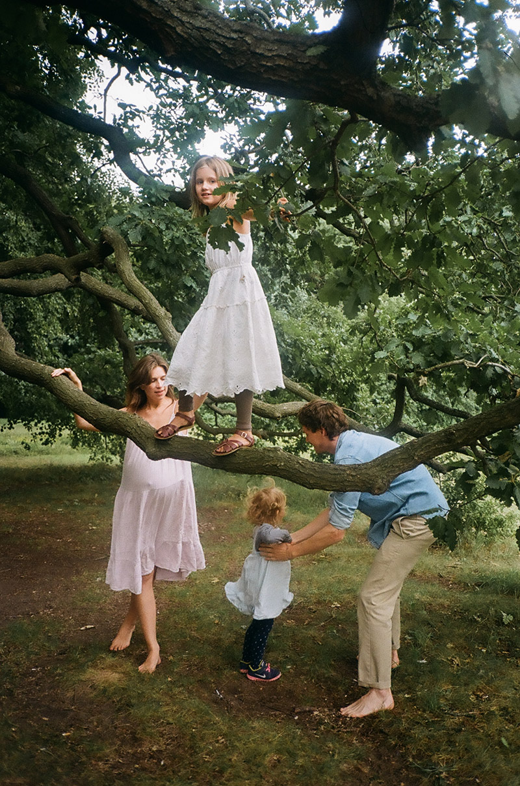
Im Frühjahr 2021 wurde meine zweite Tochter auf friedliche Weise bei uns zu Hause geboren, was mir ein weiteres tiefes Verständnis von Geburt und der damit verbundenen Transformation ins erneute Muttersein vermittelte. Außerdem durfte ich selbst erleben, wie wertvoll die Unterstützung einer dritten Person sein kann: Unsere Doula hat auf diesem Weg wunderbar mit uns zusammengearbeitet und mir geholfen, genau die Erfahrung zu machen, die ich mir gewünscht hatte.
In spring 2021, my second daughter was born peacefully at home, gifting me another deep layer of understanding around birth and the transformation of entering motherhood once again. I also experienced firsthand how priceless third-party support is: our doula worked in harmony with us, guiding me to have the exact empowered experience I had envisioned.
Nach meiner Elternzeit begann ich Anfang 2022 wieder mit der Begleitung von Schwangeren und begleitete mehrere Haus- und Krankenhausgeburten. Im Herbst 2022 nutzte ich die Gelegenheit, meine bisherigen Erfahrungen mit der Weisheit südamerikanischer Hebammen zu erweitern, als ich am Training „Indigene Pflege während Schwangerschaft und Geburt“ bei Mujeres Bachué teilnahm.
Following my maternity leave in early 2022, I returned to prenatal and birth support, accompanying multiple home and hospital births. In autumn 2022, I expanded my understanding with the ancient wisdom of South American midwives through the training "Indigenous Care During Pregnancy and Birth" with Mujeres Bachué.
Im Juni 2024 nahm ich am Workshop „Shamanic Dimensions of Pregnancy“ von Jane Hardwicke Collings teil, und im Juli 2024 wurde mein drittes Kind zu Hause geboren.
In June 2024, I participated in the workshop "Shamanic Dimensions of Pregnancy" by Jane Hardwicke Collings, and in July 2024, my third child was born at home.
Seit Sommer 2026 arbeite ich wieder als Doula. Inzwischen habe ich ca. 30 Geburten begleitet und mit über 60 Familien zusammengearbeitet. Since summer 2026, I am back to serving families full-time. To date, I have had the honor of supporting around 30 births and working with over 60 families.
Ein kleiner Einblick in meine Welt A Little Glimpse into My World
- ✹ Ich habe vier Schwangerschaften durchlebt und drei wunderbare Kinder auf die Welt gebracht (eine Geburt im Krankenhaus, zwei entspannte Hausgeburten und eine bewusste Entscheidung für einen Abbruch). I have experienced four pregnancies and brought three wonderful children into the world (one hospital birth, two peaceful home births, and a conscious choice for a termination).
- ✹ Ich bin Steinbock mit Aszendent Jungfrau. Im Human Design bin ich Generator. I am a Capricorn with Virgo rising. In Human Design, I am a Generator.
- ✹ Ich erfuhr eine große Bandbreite an postpartum – vom 1. Wochenbett als Single-Mom bei meinen Eltern, über eine wunderbar kuschelige Kennenlernzeit mit meinem Mann, bis hin zu einer sehr herausfordernden Phase mit einem High-Need-Baby und 2 Geschwisterkinder, die Sommerferien hatten. I have navigated a broad spectrum of postpartum journeys — from my first postpartum as a single mom living with my parents, to a tender cocooning time with my husband, to an intensely challenging season with a high-need baby and two older siblings on summer vacation.
- ✹ Ich liebe es einfach, Dinge zu strukturieren, zu planen und den Überblick zu behalten. I genuinely love organizing, planning ahead, and holding a calm overview.
- ✹ Wenn ich die Zeit und Ruhe habe, gibt es für mich kaum was Schöneres etwas Gesundes und Leckeres für meine Liebsten zu kochen. When time and calm allow, there is hardly anything I treasure more than cooking something deeply nourishing and delicious for the people I love.
- ✹ Ich weiß, wie es sich anfühlt eine Familie zu gründen, ohne die eigenen Eltern und Schwiegereltern im selben Land zu haben. I intimately know what it feels like to build a family without your own parents or in-laws living in the same country.
- ✹ Ich gehe super gerne früh schlafen – und mit „früh“ meine ich tatsächlich 20:30 bis 21:00 Uhr! Dementsprechend stehe ich aber auch gerne früh und vor allen anderen auf! I love going to bed early — and by "early" I truly mean 8:30 to 9:00 PM! Consequently, I love waking up at dawn before the rest of the house stirs!
- ✹ Meine Kinder gehen auf eine Waldorfschule. Aber keine Sorge: Ich bin keine Hardcore-Impfgegnerin und meinen Namen tanzen kann ich ehrlich gesagt auch nicht! My children attend a Waldorf school. But rest assured: I'm not a dogmatic ideologue, and truth be told, I can't dance my name either!
- ✹ Mein absolut liebstes Guilty Pleasure ist ein richtig guter, viel zu teurer Kaffee. Alkohol trinke ich dagegen sehr selten. My absolute favorite guilty pleasure is an exquisite, overpriced specialty coffee. I rarely drink alcohol.
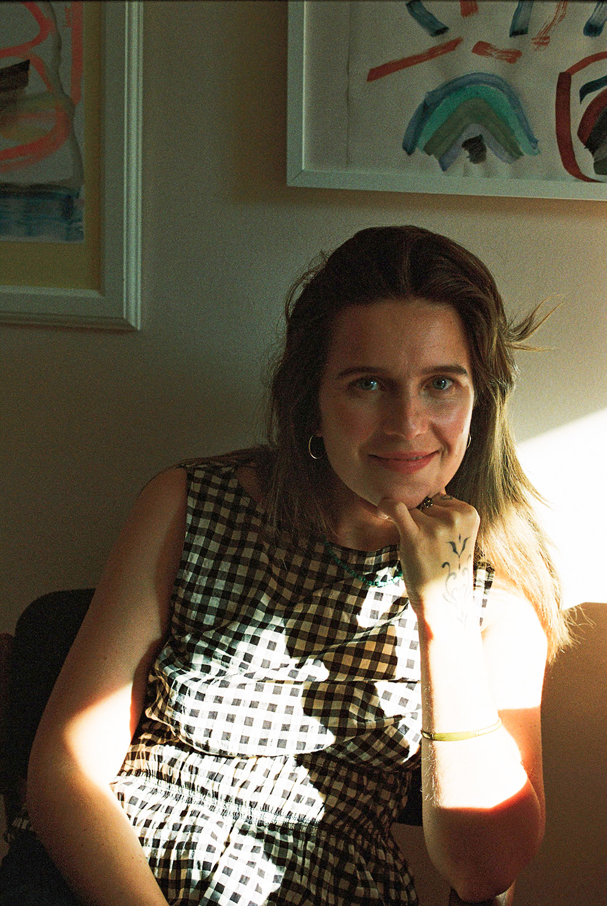
Schwangerschaft Pregnancy
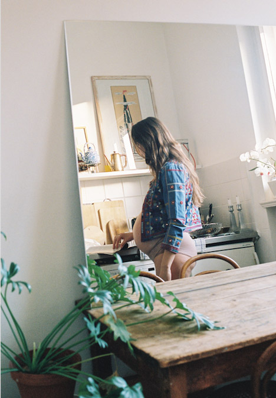
Schwangerschafts Begleitung Pregnancy Support
Jede schwangere Person steht vor eigenen Herausforderungen und wünscht sich unterschiedliche Impulse, um diese Transformation bestmöglich zu navigieren. Im Folgenden findest du ein paar beispielhafte Punkte, die bei einem Treffen in der Schwangerschaft integriert werden könnten. Je nachdem, was du gerade brauchst, besprechen wir gemeinsam, wie so eine Sitzung aussehen soll. Every pregnant person faces their own distinct emotional and physical landscape and benefits from tailored guidance. Below are inspiring examples of what we can weave into our prenatal sessions. Depending on where you are right now, we co-create what each meeting looks like.
- ✹ Beratung bei Übelkeit: Ernährungsstil, Lebensweise, Stress und andere Themen können die Übelkeit in den ersten Wochen stark beeinflussen. Morning Sickness & Nausea Support: Dietary rhythms, daily pacing, nervous system regulation, and lifestyle shifts can profoundly ease nausea during the early weeks.
- ✹ Unterstützung, den richtigen Geburtsort zu finden: Wo wir gebären, hat einen großen Einfluss darauf, wie sicher wir sich fühlen. Gerne informiere ich euch über eure Möglichkeiten und welche Vor- und Nachteile diese mit sich bringen. Choosing Your Birth Space: Where we birth shapes how deeply safe and relaxed we feel. I gladly guide you through your local options in Berlin, weighing the unique qualities of each setting.
- ✹ Geburtsplan: Erkunden deiner Wünsche, Vorbereitung auf verschiedene Szenarien und Erlernen, wie du dich im Krankenhaus oder bei einer Hausgeburt selbstbewusst bewegst. Birth Preferences & Planning: Exploring your values, preparing for diverse scenarios, and learning how to navigate clinical or home settings with calm self-advocacy.
- ✹ Aufklärung: Wir besprechen Interventionen, Schmerzmittel, Geburtsoptionen (Zwillinge, VBAC/Geburt nach Kaiserschnitt, Hausgeburt etc.) und was das alles konkret für dich bedeutet. Informed Education: We candidly review medical interventions, pain relief modalities, options like VBAC, twins, or home birth, and what each pathway concretely entails for you.
- ✹ Schwangerenmassage: Manchmal ist es das Wertvollste, einfach auf der Massagebank zu liegen und das warme Öl auf deinem Körper zu spüren, um zu merken, wer du gerade bist und was du brauchst. Ich komme dann mit einer Liege zu dir und massiere deinen Körper mit einer Wellnessmassage. Prenatal Massage: Often the most restorative gift is simply resting on a heated massage table, feeling warm nurturing oil on your body, reconnecting to yourself. I bring my professional table directly to your home for a soothing therapeutic massage.
- ✹ Praktische Vorbereitung auf Baby & Wochenbett: Was braucht ihr wirklich? Postpartum-Ernährung, das Setzen von Grenzen zum Schutz eurer „Baby-Bubble“ nach der Geburt und die Planung der Unterstützung, die du verdienst. Practical Postpartum & Baby Preparation: What do you truly need? Postpartum nutrition, establishing boundaries to protect your sacred "baby bubble", and orchestrating the community care you deserve.
- ✹ Impulse zur Selbstfürsorge: Unser Körper ist das erste Zuhause deines Babys. Wenn du dich gut fühlst, hat das direkt auch eine Auswirkung auf dein Kind. Sei nachsichtig mit dir: Wenn du jetzt lernst, dich gut um dich zu kümmern, wird es dir, wenn dein Baby da ist, leichter fallen, die Routinen hier und da in den Alltag einzubauen. Khalsa-Way-Yoga, Ayurveda, Atemarbeit, Meditation, Visualisierung und Bewegung können hilfreiche Methoden für dein Wohlbefinden sein. Self-Care Rituals: Your body is your baby's first sanctuary. When you feel grounded and held, your baby feels it directly. Be gentle with yourself: cultivating micro-moments of care now will help these practices flow naturally once your baby arrives. Khalsa Way Yoga, Ayurveda, breathwork, visualization, and mindful movement are gentle tools we can integrate.
Geburt Birth
Gemeinsam mit dir, deinem/deiner Partner/in / deiner Begleitperson und deiner Hebamme schaffe ich eine geschützte und wohlige Geburtsatmosphäre. Mein Anliegen ist es, dir genau den Raum zu schenken, den du brauchst, um dich voller Vertrauen öffnen zu können – mit so viel Privatsphäre wie möglich und so viel verlässlicher Unterstützung wie gewünscht.
Together with you, your partner / support person, and your midwife, I help weave a peaceful, sacred birthing environment. My dedication is to hold the exact space you need to surrender into birth with trust — ensuring as much intimacy as possible and as much reliable presence as you desire.
Ich begleite dich und deine Familie in ganz Berlin: zu Hause, im Geburtshaus oder im Krankenhaus. Ganz egal, wie deine Traumgeburt aussieht – ob eine natürliche Geburt, ein Kaiserschnitt oder eine VBAC (vaginale Geburt nach Kaiserschnitt).
I support you and your family across all of Berlin: at home, in a birth center, or in hospital. Whatever your vision of birth is — an unmedicated physiologic birth, a cesarean, or a VBAC (vaginal birth after cesarean).
Du kannst dir eine Doula wie eine professionelle Freundin vorstellen: Eine vertraute Begleiterin mit viel Empathie und Präsenz, aber gleichzeitig mit fundiertem Fachwissen, gesunden Grenzen und dem reinen Fokus auf deine Wünsche.
You can imagine a doula as a professional, loving friend: a familiar companion filled with empathy, grounded calm, professional expertise, clear boundaries, and unwavering focus on your autonomy.
Dein Geburtsraum gehört ganz dir: Ohne Bewertung und ohne eigene Agenda begleite ich dich auf deinem Weg. Ich halte dir den Rücken frei – emotional, praktisch und informativ –, damit du selbstbewusst eigene Entscheidungen triffst und dich rundum geborgen und getragen fühlst.
The birth space is yours alone: Free from judgment or personal agendas, I walk alongside you. I hold your back — emotionally, practically, and informatively — so you make empowered decisions and feel completely safe, cherished, and held throughout.
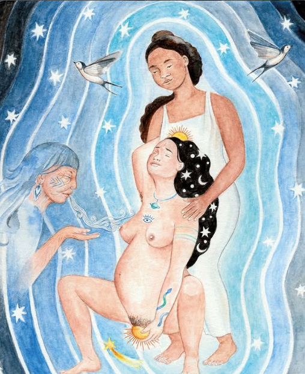
Was meine Geburtsbegleitung umfasst What My Birth Support Includes
- ✹ Unverbindliches Kennenlernen: Ein erstes Gespräch, um zu spüren, ob die Chemie zwischen uns stimmt. Free Initial Consultation: A relaxed first meeting to sense our mutual connection and chemistry.
- ✹ Erfahrung aus meinen eigenen 3 Geburten und den der 30 Familien, die ich bisher bei ihrer Geburt begleiten durfte. Wisdom from my own 3 births and the nearly 30 families I have accompanied through labor.
- ✹ Treffen (ca. 2 Stunden): Raum für deine Fragen, Wünsche und die gemeinsame Vorbereitung auf verschiedene Geburtsszenarien, sowie Tipps, die du mit zu Terminen bringen kannst, damit du all deine Optionen kennst. In-Depth Prenatal Sessions (approx. 2 hours): Dedicated space for your questions, desires, birth mapping, and tools for doctor/clinic appointments.
- ✹ Kennenlernen deiner Hebamme: Auf Wunsch nehme ich an einem Gespräch mit deiner Hebamme teil, damit wir als Team bestmöglich harmonieren. Connecting with Your Midwife: If desired, I join a conversation with your midwife to ensure harmonious teamwork.
- ✹ Laufende Betreuung: Ständige Telefon- und E-Mail-Bereitschaft für dich und deine/n Partner/in bei allen aufkommenden Fragen. Ongoing Availability: Phone, messaging, and email support throughout pregnancy for you and your partner.
- ✹ 24/7 Rufbereitschaft: Ab 17 Tage vor bis 17 Tage nach deinem errechneten Geburtstermin bin ich rund um die Uhr für dich auf Abruf. 24/7 On-Call Window: Dedicated round-the-clock on-call availability from 17 days before until 17 days after your estimated due date.
- ✹ Atmosphäre: Aktives Gestalten einer beruhigenden Umgebung (z. B. durch gedimmtes Licht, Kerzen, Entspannungsmusik/Töne und Aromatherapie). Ambiance Creation: Intentionally creating a calm sanctuary (dimmed lighting, candles, soothing soundscapes, aromatherapy).
- ✹ Geburtsraum: Haltender Raum, Ermutigung, Führung durch Atemarbeit und Fokus. Continuous Space-Holding: Constant emotional anchoring, encouragement, vocal toning, and breathwork guidance.
- ✹ Körperliche & natürliche Schmerzlinderung: Einsatz bewährter Methoden wie Rebozo-Techniken, Massagen, sanfte Berührungen, TENS-Gerät und Atemübungen. Physical & Comfort Measures: Rebozo techniques, acupressure, counter-pressure massage, TENS unit, and hands-on comfort.
- ✹ Stärkung deiner Begleitperson: Aktive Einbindung deines/deiner Partner/in, damit auch er/sie sich sicher, entspannt und einbezogen fühlt. Partner Empowerment: Actively supporting your partner so they feel confident, rested, and deeply involved.
- ✹ Geburtsfotos und Videoaufnahmen (falls dies von dir gewünscht ist). Birth Photography & Video: Capturing tender, raw memories of your birth journey (if desired).
- ✹ Kommunikation & Fürsprache: Unterstützung beim Austausch mit dem Klinikpersonal und beim selbstbewussten Vertreten deiner Wünsche. Advocacy & Communication: Supporting gentle, assertive communication with clinical staff.
- ✹ Eine vertraute Vertretungs-Doula. A Trusted Backup Doula: Guaranteed backup coverage for seamless peace of mind.
Wenn du BIPOC, Alleinerziehende oder eine Familie mit geringem Einkommen bist, melde dich gerne – ich bin offen für Energie- oder Arbeitsaustausch. If you are BIPOC, a single mother, or living on a low income, please reach out — I am open to energy exchange or flexible sliding scale arrangements.
Postpartum / Wochenbett Postpartum & Fourth Trimester
Wenn ein Baby geboren wird, steht die Welt Kopf, denn es wird auch eine Mutter, sowie eine neue Familie geboren.
When a baby is born, the world tilts — because a mother and a brand-new family are also born.
Eine neugeborene Mama – egal ob beim ersten oder fünften Kind – ist in dieser Zeit genauso verletzlich und schutzbedürftig wie ihr Baby selbst. Mütter sind oft unglaublich müde und gleichzeitig so wach, um jedes Signal des Babies zu verstehen: Sie lernen sich völlig neu kennen und auch der Partner begegnet einer neuen Frau.
A newly born mother — whether welcoming her first or fifth child — is just as tender, vulnerable, and in need of protection as her newborn baby. Mothers are often unimaginably exhausted yet acutely awake to every newborn cue: they are discovering a new self, and partners are meeting a transformed woman.
In vielen Kulturen weltweit ist es tief verankert, Frauen diese geschützte Zeit zu schenken. Oft sind es die traditionellen 40 Tage, in denen sich Mütter ganz erholen und ankommen dürfen – frei von normalen Verpflichtungen. Was auf den ersten Blick extrem oder unmodern wirken mag, wird beim Blick auf den Alltag einer jungen Mutter schnell klar: Umfassende Unterstützung im Haushalt und im Hintergrund ist in dieser Phase unverzichtbar.
In traditional cultures across the globe, it is deeply sacred to gift mothers an undisturbed cocoon during this time. Often honoring the traditional 40 days, mothers are encouraged to rest completely, bond, and heal — released from daily chores and societal obligations. While this may seem unusual in modern life, looking at the reality of new parenthood makes it obvious: comprehensive, unobtrusive support in the background is invaluable.
Doulas sind dafür da ohne eigene Wertung ein gutes Gefühl und Sicherheit zu geben. Menschen, bei denen man sich gesehen fühlt und die liebevoll für einen sorgen. Sie bleiben entspannt – auch wenn Stress aufkommt, sind positiv eingestellt, haben eine unkomplizierte Haltung zu ihrer eigenen Identität, können einen Haushalt effektiv schmeißen und haben Erfahrung im Umgang mit frischgebackenen Müttern und Babys.
Doulas are here to bring safety, non-judgmental warmth, and ease. People in whose presence you feel deeply seen and cherished. Doulas stay calm under pressure, maintain an uplifting grounded spirit, keep a household running effortlessly, and hold rich experience caring for new mothers and infants.
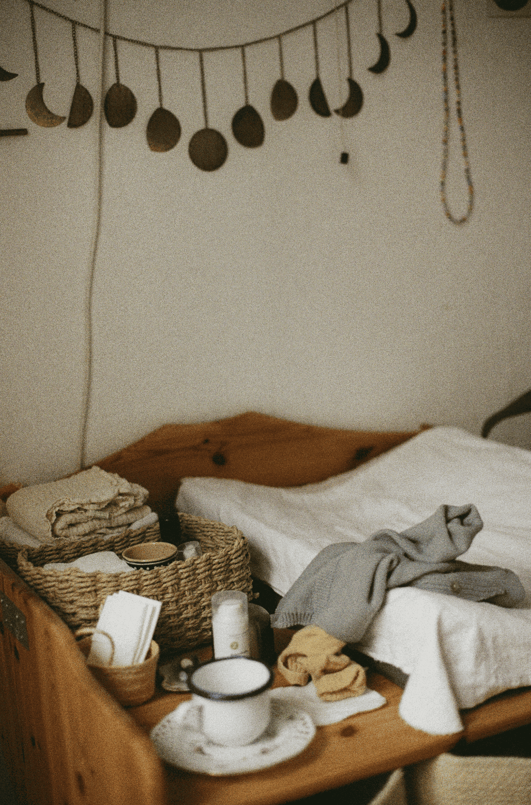
Meine Leistungen im Wochenbett: Postpartum Care Services:
- ✹ Wochenbett-Nahrung: Nährende, kräftigende Verpflegung für deine Regeneration. Postpartum Nourishment: Nutrient-dense, warming meals and broths tailored for physical recovery.
- ✹ Geburtsverarbeitung: Geschützter Raum zum Nachbesprechen und Verarbeiten deiner Geburtserfahrung. Birth Story Integration: A compassionate, confidential space to debrief and process your birth.
- ✹ Warme Ölmassagen Warm Herbal Oil Massages
- ✹ Haushalt & Verpflegung: Zubereitung von Mahlzeiten und leichte Entlastung im Haushalt. Household & Light Support: Preparing wholesome dishes and providing gentle household ease.
- ✹ Schlaf-Unterstützung: Sanfte Begleitung bei Überforderung und extremem Schlafmangel. Rest & Sleep Sanctuary: Holding baby so you can nap, rest, shower, or simply breathe.
- ✹ Laufender Support: Unbegrenzte Telefon- und E-Mail-Beratung für all deine Fragen. Continuous Check-Ins: Unlimited phone and messaging guidance for all your questions.
- ✹ Netzwerk & Empfehlungen: Vermittlung von Fachpersonal und Spezialist:innen bei Bedarf. Trusted Referrals: Direct recommendations to lactation consultants and specialists.
- ✹ Ganzheitliche Erholung: Begleitung deiner körperlichen und emotionalen Heilung (inkl. Begleitung zu Arztterminen). Holistic Recovery: Holding space for your physical and emotional healing (including appointments).
- ✹ Baby-Pflege & -Praxis: Praktisches Wissen, Anleitung und bewährte Beruhigungstechniken, einfühlsame Anleitung für das Binden von Tragetüchern und Slings. Newborn Care & Babywearing: Gentle soothing wisdom, newborn care, and guidance on wraps and slings.
✹ 2 hrs x 10 sessions — 1.100€
✹ 4 hrs x 10 sessions — 2.200€
Kräuterbad und postpartum Massage (ca. 3 Stunden) Herbal Bath & Postpartum Massage Ritual (approx. 3 hours)
210 EuroWochenbettmassagen haben in der ayurvedischen Medizin eine lange Tradition. Eine Bauchmassage mit speziellen Ölen unterstützt deinen Körper bei der Rückbildung. Der gesamte Bauchraum erfährt Entspannung, die Organe finden leichter wieder an ihren ursprünglichen Platz zurück. Dadurch werden die Energien im dritten Chakra wieder zum fließen gebracht, besonders auch nach Kaiserschnitt, da dieser Bereich erst einmal getrennt wurde. Diese Massage ist tief entspannend. Im Ayurveda wird diese Massage am Anfang täglich im Wochenbett empfohlen, später wöchentlich. Postpartum massage carries a revered tradition in Ayurvedic medicine. Abdominal massage with tailored herbal oils gently aids uterine involution and organ realignment. The entire core releases deep tension, helping internal organs settle into place. This harmonizes energetic flow in the solar plexus chakra — especially vital after a cesarean birth where tissues were severed. Deeply grounding and restorative, Ayurveda traditionally recommends this massage daily in the earliest weeks, followed by weekly sessions.
Gebärpool Verleih Birth Pool Rental
Sanfte Wassergeburt zuhause Gentle Water Birth at Home
Wasser bietet während der Geburt optimale Schwerelosigkeit, Entlastung und natürlichen Schmerzschutz. Mein Leih-Set enthält alles, was du für deine Hausgeburt benötigst. Water offers optimal buoyancy, deep physical relief, and natural comfort during birth. My complete rental set includes everything required for your home water birth.
- ✹ Komplettes Equipment: Pool, elektrische Luftpumpe, Wasserpumpe & Schlauch
- ✹ Complete Equipment: Pool, electric air pump, submersible water pump & food-grade hose
- ✹ Hygiene: Inklusive neuem, originalverpacktem Einweg-Inliner
- ✹ Hygiene: Includes brand-new, sealed single-use liner
- ✹ Leihdauer: Flexibel von 37+0 bis nach der Geburt
- ✹ Rental Period: Flexible window from 37+0 weeks until after your baby arrives
Erfahrungen & Testimonials Stories & Testimonials
Was Familien über die gemeinsame Zeit, die Unterstützung während der Schwangerschaft, bei der Geburt und im Wochenbett berichten. What families share about our shared journey through pregnancy, birth, and the fourth trimester.
„That was the most wonderful support ever! I am so grateful to you and my family for supporting us with our second child and now again with our third. Holding space for us was so valuable, even during the birth; it was the most beautiful gift we could have given ourselves! Forever connected in the cycle of pregnancy, birth, and the postpartum period. Your Mother Blessing and Closing the Bones were so beautiful; I felt so emotionally supported just knowing you were there. And your postpartum course with all those amazing women was incredibly enriching! I hope that many more women will have this experience with you. Thank you so much!“
„Liebe Lara, deine Begleitung während meiner Schwangerschaft war wie ein roter Faden aus liebevoller Unterstützung, Austausch, und Informationen, der mir dabei half trotz einer stressigen Zeit und einigen Hürden ganz bei mir und meinem Baby zu bleiben, und in uns und meinen Körper zu vertrauen. Dein ruhiges, erfahrenes Da-Sein während der gesamten Geburt half uns sehr dabei, meiner Tochter und mir eine wundervoll sanfte und stärkende Geburtsreise bei uns Zuhause zu schenken. Die sanfte, liebevolle Art mit der du Raum für jede Emotion hältst, hat mir von Anfang an immer die Sicherheit und das Vertrauen Geschenkt, alle Sorgen und Freuden mit dir zu teilen. Im Wochenbett hast du mir wundervolle Wärme geschenkt und mich immer daran erinnert selbst nachzufühlen, meine Bedürfnisse zu äußern und mich auch mal feiern zu lassen! Ich danke dir von Herzen für alles.“
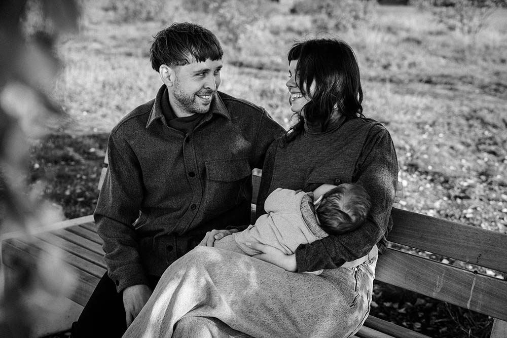
„Liebe Lara, es war wunderschön Dich als meine Doula in so einer Lebensverändernden Zeit zu haben! Immer wieder hast du mich erinnert, was für eine große Umstellung ein Baby ist und, dass ich alle “Skills” in mir habe. Du hast mir geholfen auf meine Intuition zu vertrauen und mich darin bestärkt, dass eine Mama, insbesondere auch im Wochenbett und unter der Geburt, nur das ALLER-beste verdient! Tausend Dank! Du hast mir, unglaublich geholfen immer wieder in meine Mitte zu finden“
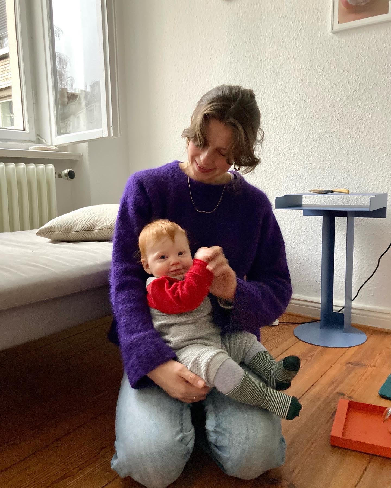
„Es war eine wundervolle und die genau richtige Entscheidung Lara als Doula während der Schwangerschaft, bei der Geburt und nach der Geburt an meiner Seite zu haben. Sie hat mich unendlich einfühlsam begleitet, bestärkt, mir Mut gemacht und mir geholfen ich zu sein und bei allen wichtigen Entscheidungen auf meine innere Stimme zu hören. Es tat mir gut eine so einfühlsame weiche liebe Seele bei mir zu haben während dieser für mich sehr herausfordernden Lebenssituation. Danke Lara“
„Lara hat mich seit meiner achten Schwangerschaftswoche bis nach dem Wochenbett als Doula begleitet und es war die beste Entscheidung meines Lebens. Ich hab mich durch ihre zauberhafte Art und ihr umfassendes Wissen zu allen Themen in Weiblichkeit, Ayurveda und Yoga so gut betreut gefühlt, dass ich sie jeder werdenden Mama ans Herz lege. Ich war nach jedem Treffen mit ihr in Wärme und Liebe eingehüllt und hatte eine wunderschöne Schwangerschaft. Von Herzen Danke liebe Lara :).“
Möchtest du weitere persönliche Erfahrungen und Empfehlungen lesen? Schau dir gerne alle Rezensionen auf Google Maps an. Curious to read more personal family experiences and reviews? Visit my Google Maps profile anytime.
Möchtest du auch begleitet werden? Would You Like to Be Supported?
Lass uns in einem unverbindlichen Erstgespräch kennenlernen und besprechen, wie ich dich unterstützen kann. Let’s connect for a relaxed, non-binding initial conversation to explore how I can best support you.
Schreib mir gerne Say Hello

Lass uns besser kennenlernen! Alles, was du hier über mich gelesen hast, gibt dir ein erstes Gefühl wer ich bin und wie ich arbeite. Um zu wissen, ob ich die richtige Doula für euch bin braucht es aber mehr, daher melde dich gerne und wir machen ein persönliches kostenloses Kennenlernen aus. Let's get to know each other! Everything you have read here offers a first feeling for who I am and how I hold space. True resonance requires a real conversation — please reach out so we can schedule a warm, complimentary initial meeting.
Datenschutzerklärung
Stand: 2026
Verantwortlicher
Lara Süss / Motherlover
Obentrautstrasse 32
10963 Berlin
E-Mail-Adresse: infomotherlover@gmail.com
Website: www.motherloverberlin.de
Kontaktformular & Formspree
Wenn Sie über unser Kontaktformular Anfragen an uns senden, werden Ihre Angaben inklusive der von Ihnen dort angegebenen Kontaktdaten zwecks Bearbeitung der Anfrage und für den Fall von Anschlussfragen bei uns verarbeitet. Zur technischen Bereitstellung unseres Kontaktformulars nutzen wir den Dienst Formspree (Formspree Inc., USA). Hierbei werden Ihre Daten verschlüsselt übertragen und verarbeitet.
Rechte der betroffenen Personen
Ihnen stehen als Betroffene nach Art. 15 bis 21 DSGVO folgende Rechte zu: Widerspruchsrecht, Widerrufsrecht bei Einwilligungen, Auskunftsrecht, Recht auf Berichtigung, Löschung & Einschränkung sowie Recht auf Datenübertragbarkeit.
Impressum
Angaben gemäß § 5 DDG
Lara Süss
Obentrautstrasse 32
10963 Berlin
Kontakt
E-Mail: infomotherlover@gmail.com
Haftung für Inhalte
Die Inhalte meiner Seiten wurden mit größter Sorgfalt erstellt. Für die Richtigkeit, Vollständigkeit und Aktualität der Inhalte kann ich jedoch keine Gewähr übernehmen.